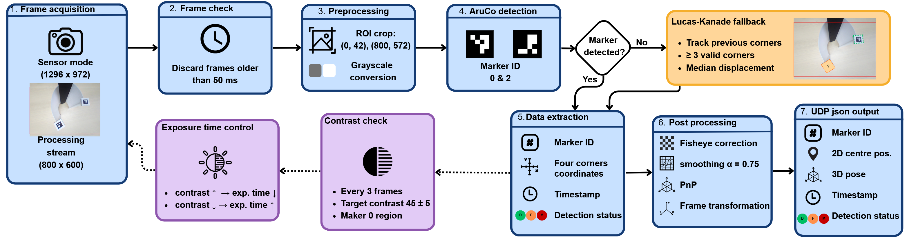
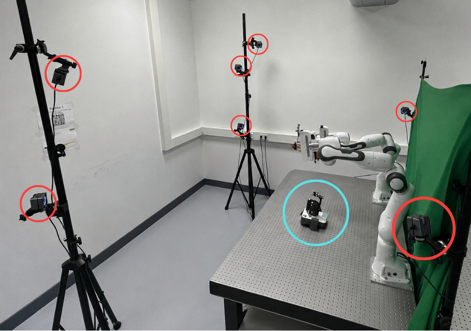

MSc Robotics Thesis · TU Delft · 2026
Camera-Based Hand-Trainer Motion Tracking
I designed and validated a low-cost onboard computer-vision system that independently tracks both sides of a compliant hand-rehabilitation device in real time.

8.5 / 10
Final MSc thesis grade
1 camera · 2 markers
Independent tracking of thumb- and finger-side shell motion
190 g · €56.44
Complete prototype mass · tracking hardware cost
Context
A trade-off in portable hand rehabilitation
Compact rehabilitation devices often measure only a few inputs such as grip force or finger pressure. This keeps them simple, but does not separately capture movements such as hand opening, thumb motion or pinching.
Wearable alternatives can capture more detailed finger movement, but may be harder for users with impaired hand function to put on independently. The Alpha Hand Trainer uses a compliant shell to retain a simple portable form while allowing richer hand movement.
Challenge
Measure a compliant structure without filling it with sensors
The shell deforms differently during opening, grasping and pinch-like movements. Measuring both shell sides with embedded sensing could require multiple sensors, wiring and electronics on the moving structure.
I investigated whether one onboard camera and two passive markers could provide separate, accurate and responsive measurements while keeping the system compact and low-cost.
Solution
One camera, two markers, onboard processing
A wide-angle RGB camera and Raspberry Pi Zero 2 W were integrated into the trainer. Two ArUco markers identify the thumb- and finger-side shell regions, allowing planar position and 3D pose to be estimated independently.
The complete processing pipeline runs onboard and sends position, orientation, timestamps and tracking-state information wirelessly to a host application over UDP.
Demo
Tracking the shell in real time
The physical trainer is shown alongside live front- and top-view visualizations generated from the tracked marker motion.
System architecture
From camera frame to rehabilitation input
The onboard pipeline combines image preprocessing, marker detection, optical-flow fallback, pose estimation, smoothing and wireless transmission.

Validation
Compared against OptiTrack ground truth
I designed the validation setup and compared the camera-derived measurements with an independent seven-camera OptiTrack system recording at 240 Hz.
The evaluation covered tracking accuracy, orientation, static precision, detection robustness, output rate and camera-to-client latency across different lighting conditions and movement speeds.

Key results
Technical performance
Headline results from the validation; the complete experimental analysis is available in the thesis.
One limitation remained: the ≥20 Hz output-rate target was narrowly missed at 1000 lx, with a worst intended-condition mean of 19.29 Hz.
My contribution
End-to-end engineering
- System concept and camera / marker integration
- Python and OpenCV tracking software
- ArUco detection and PnP pose estimation
- Lucas–Kanade optical-flow fallback
- Custom exposure-control strategy
- UDP communication and live visualization
- OptiTrack reference reconstruction and validation
- Experimental design, data analysis and performance evaluation
Technology
PythonOpenCVArUcoPnP / IPPE
Lucas–Kanade Optical FlowRaspberry Pi Zero 2 W
RGB CameraUDP / JSONOptiTrack
SolidWorksData AnalysisExperimental Validation